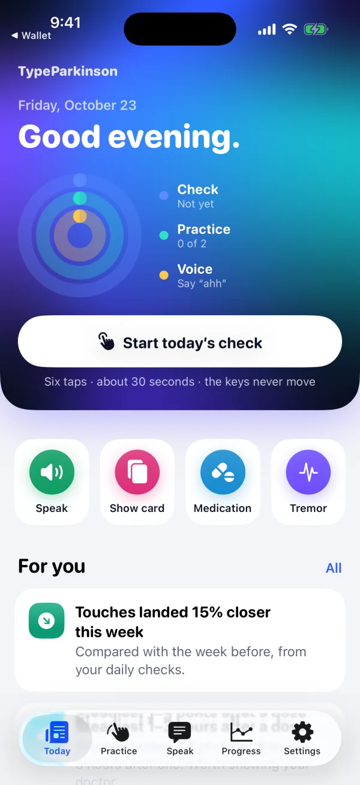
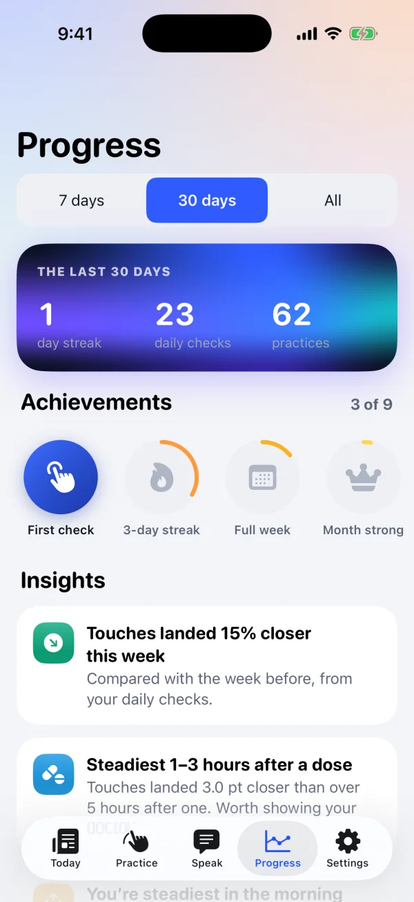

Trace a spiral
Follow a line. Track closeness and smoothness.
In development for iPhone & iPad
For the words you want to say, even when your hands have other plans.
TypeParkinson learns how you touch the screen and builds a keyboard around you. Made for people living with Parkinson’s.

Actual app · Simulator sample data
Every tap has an intention.
Tremor and stiffness can make a standard keyboard harder to use. A message shouldn’t have to become a test of precision.
An estimated 1.1 million people in the U.S. live with Parkinson’s. Parkinson’s Foundation
A few short exercises start the process. Your hands set the pace.
Tap, trace and type. Learn where your touches land and how they move.
Personal key sizing, touch interpretation and filters for extra or accidental touches.
Try a standard keyboard and your personal one. Compare your own results.
Enable the system keyboard for supported apps. No Full Access needed.
Touch-aware smart correction
A neighboring key. A repeated touch. A missed letter. The personal keyboard looks at the touch pattern and the word you might mean.
On your iPhone, the decoder combines your touch model with word likelihood. A correction is always one tap from being undone.
Try a sample, then press space. This web illustration uses four fixed examples; the app uses your actual touches.
Press space to see the idea.
Small activities for your hands and voice. A daily record that’s yours to keep.
Follow a line. Track closeness and smoothness.
Two targets, ten seconds. See your pace and evenness.
Everyday sentences on your personal keyboard.
A ten-second reading of shake strength and rate.
Say “ahh” and see your volume reach the loud zone.
Type to speak aloud, save useful phrases, or show a full-screen communication card.
Explore SpeakActivities describe touch, movement and voice. They do not diagnose a condition or replace clinical care.

A record for the next conversation
Notice when typing feels steadier. Keep daily checks, practice results and medication logs together. Export your history for a conversation with your care team.
Screen shows simulator sample data. A timing pattern is an observation, not proof that medication caused a change. TypeParkinson never recommends a dose.
Your touch model and corrections run on your iPhone.
No advertising or tracking. Optional sync uses your own iCloud.
The keyboard never saves what you type and works without Full Access.
A 94-second film about turning a touch into the word someone meant.
Congressional App Challenge
We’re building TypeParkinson to make everyday communication more accessible, one touch at a time.